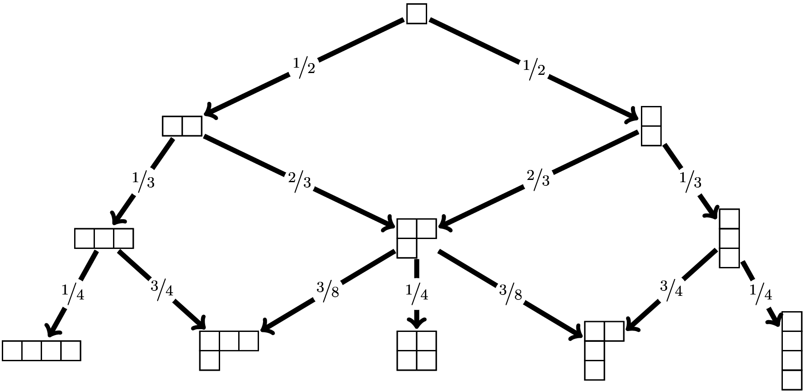

-
Some R functions for Young tableaux
2016-07-29
SourceThis blog post provides some R functions dealing with Young tableaux. They allow to get:
the incidence matrices of the Young graphs;
the standard Young tableaux of a given shape;
the Plancherel measure and the transition probabilities of the Plancherel growth process;
the pair of standard Young tableaux corresponding to a permutation by the Robinson-Schensted correspondence.
Integer partitions and Young graph
The integer partitions are computed by the
partsfunction of the R packagepartitions. For example the partitions of \(4\) are obtained as follows:library(partitions) parts(4) ## ## [1,] 4 3 2 2 1 ## [2,] 0 1 2 1 1 ## [3,] 0 0 0 1 1 ## [4,] 0 0 0 0 1The Young graph is the Bratteli graph whose set of vertices at each level \(n\) is the set of partitions of \(n\) and whose edges connect each partition of weight \(n\) at level \(n\) to its superpartitions of weight \(n+1\) at level \(n+1\).
The R function
ymatricesbelow returns the incidence matrices \(M_n\) of the Young graph.removezeros <- function(x){ # e.g c(3,1,0,0) -> c(3,1) i <- match(0L, x) if(!is.na(i)) return(head(x,i-1L)) else return(x) } ymatrices <- function(N){ M <- vector(N, mode="list") M[[1]] <- matrix(1L) M[[2]] <- matrix(c(1L,1L), ncol=2) M[[3]] <- rbind(c(1L,1L,0L), c(0L,1L,1L)) colnames(M[[2]]) <- rownames(M[[3]]) <- apply(parts(2), 2, function(x) paste0(removezeros(x), collapse="-")) rownames(M[[2]]) <- "1" M1 <- parts(3) colnames(M[[3]]) <- apply(M1, 2, function(x) paste0(removezeros(x), collapse="-")) if(N>3){ for(k in 4:N){ M0 <- M1; M1 <- parts(k) m <- ncol(M0); n <- ncol(M1) C <- array(0L, dim=c(m,n)) rownames(C) <- apply(M0, 2, function(x) paste0(removezeros(x), collapse="-")) colnames(C) <- apply(M1, 2, function(x) paste0(removezeros(x), collapse="-")) C[1,1:2] <- C[m,c(n-1,n)] <- TRUE for(j in 2:(m-1)){ l <- match(0, M0[,j]) - 1L x <- M0[1L:l,j] ss <- c(1L, which(diff(x)<=0)+1L) nss <- length(ss) connected <- character(nss+1L) for(i in seq_len(nss)){ y <- x y[ss[i]] <- y[ss[i]]+1L connected[i] <- paste0(y, collapse="-") } connected[nss+1L] <- paste0(c(x,1L), collapse="-") ind <- which(colnames(C) %in% connected) C[j,ind] <- 1L } M[[k]] <- C } } return(M) } ( Mn <- ymatrices(4) ) ## [[1]] ## [,1] ## [1,] 1 ## ## [[2]] ## 2 1-1 ## 1 1 1 ## ## [[3]] ## 3 2-1 1-1-1 ## 2 1 1 0 ## 1-1 0 1 1 ## ## [[4]] ## 4 3-1 2-2 2-1-1 1-1-1-1 ## 3 1 1 0 0 0 ## 2-1 0 1 1 1 0 ## 1-1-1 0 0 0 1 1Standard Young tableaux
A path connecting to the root vertex to a partition \(\lambda\) at level \(n\) corresponds to a standard Young tableau of shape \(\lambda\).
- Number of standard Young tableaux of a given shape. Once we have the incidence matrices of a Bratteli graph, it is easy to compute the number of paths connecting the root vertex to any vertex at a given level. Thus, we get the number of standard Young tableaux of each shape from the incidences matrices \(M_n\). These numbers are returned by the function
Flambdabelow.
Dims <- function(Mn, N){ Dims <- vector("list", N) Dims[[1]] <- dims0 <- Mn[[1]][1,] for(k in 2:N){ Dims[[k]] <- dims0 <- (dims0 %*% Mn[[k]])[1,] } return(Dims) } Flambda <- function(N){ return(Dims(ymatrices(N),N)) } Flambda(4) ## [[1]] ## [1] 1 ## ## [[2]] ## 2 1-1 ## 1 1 ## ## [[3]] ## 3 2-1 1-1-1 ## 1 2 1 ## ## [[4]] ## 4 3-1 2-2 2-1-1 1-1-1-1 ## 1 3 2 3 1- Paths to a given level. The
PathsAtLevelfunction below returns all the paths of the Young graph going from the partition"1"to the vertices at a given level.
PathsAtLevel <- function(N){ Mn <- ymatrices(N)[-1] f <- function(column, n) sapply(names(which(Mn[[n+1]][column[n],]==1L)), function(x) c(column,x)) ff <- function(x, n) lapply(seq_len(ncol(x)), function(i) f(x[, i], n)) x <- colnames(Mn[[1]]) if(N > 2) x <- do.call(cbind, sapply(x, f, n=1, simplify=FALSE)) if(N > 3){ for(i in 2:(N-2L)){ x <- do.call(cbind, ff(x,i)) } } out <- rbind("1", x) rownames(out) <- 1:N out <- do.call(cbind, lapply(colnames(Mn[[N-1L]]), function(part) out[, which(colnames(out)==part), drop=FALSE])) names(dimnames(out)) <- c("level", "partition") return(out) } PathsAtLevel(4) ## partition ## level 4 3-1 3-1 3-1 2-2 2-2 2-1-1 2-1-1 2-1-1 1-1-1-1 ## 1 "1" "1" "1" "1" "1" "1" "1" "1" "1" "1" ## 2 "2" "2" "2" "1-1" "2" "1-1" "2" "1-1" "1-1" "1-1" ## 3 "3" "3" "2-1" "2-1" "2-1" "2-1" "2-1" "2-1" "1-1-1" "1-1-1" ## 4 "4" "3-1" "3-1" "3-1" "2-2" "2-2" "2-1-1" "2-1-1" "2-1-1" "1-1-1-1"- Paths to a given vertex. The
PathsToVertexfunction below returns all the paths of the Young graph going from the partition"1"to a given vertex.
string2letters <- function(string){ # e.g. "abc" -> c("a","b","c") rawToChar(charToRaw(string), multiple = TRUE) } PathsToVertex <- function(vertex){ N <- sum(as.integer(string2letters(vertex)[(1:nchar(vertex))%%2L==1L])) Mn <- ymatrices(N+1)[-1] f <- function(row, n) sapply(names(which(Mn[[n-1]][,row[1]]==1L)), function(x) c(x,row)) ff <- function(x, n) lapply(seq_len(ncol(x)), function(i) f(x[, i], n)) x <- vertex x <- f(x, n=N) for(i in 1:(N-3L)){ x <- do.call(cbind, ff(x, N-i)) } x <- rbind("1", x) colnames(x) <- NULL rownames(x) <- 1:N return(x) } PathsToVertex("3-2") ## [,1] [,2] [,3] [,4] [,5] ## 1 "1" "1" "1" "1" "1" ## 2 "2" "2" "1-1" "2" "1-1" ## 3 "3" "2-1" "2-1" "2-1" "2-1" ## 4 "3-1" "3-1" "3-1" "2-2" "2-2" ## 5 "3-2" "3-2" "3-2" "3-2" "3-2"- Convert path to tableau. A path from the partition
"1"to a vertex \(\lambda\) corresponds to a standard Young tableau. Thepath2syfunction below returns the standard Young tableau corresponding to a given path.
charpart2vec <- function(x){ # e.g. "3-1-1" -> c(3,1,1,0,0) p <- as.integer(string2letters(x)[(1:nchar(x))%%2L==1L]) out <- rep(0L, sum(p)) out[seq_along(p)] <- p return(out) } path2sy <- function(path){ v <- tail(path,1) SY <- rep(list(NULL), (nchar(v)+1)/2) SY[[1]] <- 1L for(k in 2:length(path)){ x <- path[k-1L]; y <- path[k] i <- which(charpart2vec(y)-c(charpart2vec(x),0L) == 1L) SY[[i]] <- c(SY[[i]], k) } attr(SY, "path") <- path return(SY) } path2sy(c("1", "2", "2-1", "3-1", "3-1-1")) ## [[1]] ## [1] 1 2 4 ## ## [[2]] ## [1] 3 ## ## [[3]] ## [1] 5 ## ## attr(,"path") ## [1] "1" "2" "2-1" "3-1" "3-1-1"Plancherel measure and Plancherel growth process
- The Plancherel probability measure \(\mu_n\) on the set of integer partitions of \(n\) is given by \[
\mu_n(\lambda) = \frac{{(f^\lambda)^2}}{n!},
\] where \(f^\lambda\) is the number of standard Young tableaux of shape \(\lambda\). It is returned by the
Mufunction below. I use thegmppackage to get the result in rational numbers.
library(gmp) Mu <- function(N, mode=c("bigq", "numeric", "character")){ flambda <- Flambda(N) mu <- lapply(1:N, function(i) as.bigq(flambda[[i]]^2, factorialZ(i))) if(match.arg(mode)=="numeric"){ mu <- lapply(mu, as.numeric) for(n in 1:N) names(mu[[n]]) <- names(flambda[[n]]) } if(match.arg(mode)=="character"){ mu <- lapply(mu, as.character) for(n in 1:N) names(mu[[n]]) <- names(flambda[[n]]) } return(mu) } Mu(4) ## [[1]] ## Big Rational ('bigq') : ## [1] 1 ## ## [[2]] ## Big Rational ('bigq') object of length 2: ## [1] 1/2 1/2 ## ## [[3]] ## Big Rational ('bigq') object of length 3: ## [1] 1/6 2/3 1/6 ## ## [[4]] ## Big Rational ('bigq') object of length 5: ## [1] 1/24 3/8 1/6 3/8 1/24It is not possible to name the elements a
bigqvector. The optionmode="numeric"ormode="character"returns the vectors in numeric mode or character mode, with names:Mu(3, "numeric") ## [[1]] ## [1] 1 ## ## [[2]] ## 2 1-1 ## 0.5 0.5 ## ## [[3]] ## 3 2-1 1-1-1 ## 0.1666667 0.6666667 0.1666667 Mu(3, "character") ## [[1]] ## [1] "1" ## ## [[2]] ## 2 1-1 ## "1/2" "1/2" ## ## [[3]] ## 3 2-1 1-1-1 ## "1/6" "2/3" "1/6"- The incidence matrices \(M_n\) easily allow to get the transition probabilities of the Plancherel growth process, using the Vershik-Kerov formula. They are returned by the following function. I use the
gmppackage to get exact results.
library(gmp) Plancherel <- function(N, mode=c("bigq", "numeric", "character")){ Mn <- ymatrices(N+1L) Y <- Dims(Mn, N+1L)[-1] Mn <- Mn[-1] Q <- vector(N, mode="list") Q[[1]] <- t(as.matrix(as.bigq(c(1,1),c(2,2)))) Q[[2]] <- matrix(c(as.bigq(c(1,2,0),3), as.bigq(c(0,2,1),3)), nrow=2, byrow=TRUE) for(k in 3:N){ C <- Mn[[k]] m <- nrow(C); n <- ncol(C) y <- rep(NA, n); y[n] <- 1L Y0 <- Y[[k-1L]] Y1 <- Y[[k]] q <- as.bigq(matrix(NA, nrow=m, ncol=n)) for(i in 1:m){ q[i,] <- C[i,]*as.bigz(Y1)/as.bigz(Y0[i])/(k+1L) } Q[[k]] <- q } return(Q) if((mode <- match.arg(mode)) != "bigq"){ convert <- if(mode=="numeric") as.numeric else as.character v <- ifelse(mode=="numeric", 0, "") for(k in 1:N){ Qbigq <- Q[[k]] Qnum <- matrix(v, nrow=dim(Qbigq)[1], ncol=dim(Qbigq)[2]) for(i in 1:nrow(Qnum)){ Qnum[i,] <- convert(Qbigq[i,]) } dimnames(Qnum) <- dimnames(Mn[[k]]) Q[[k]] <- Qnum } } return(Q) } Plancherel(3) ## [[1]] ## Big Rational ('bigq') 1 x 2 matrix: ## [,1] [,2] ## [1,] 1/2 1/2 ## ## [[2]] ## Big Rational ('bigq') 2 x 3 matrix: ## [,1] [,2] [,3] ## [1,] 1/3 2/3 0 ## [2,] 0 2/3 1/3 ## ## [[3]] ## Big Rational ('bigq') 3 x 5 matrix: ## [,1] [,2] [,3] [,4] [,5] ## [1,] 1/4 3/4 0 0 0 ## [2,] 0 3/8 1/4 3/8 0 ## [3,] 0 0 0 3/4 1/4It is not possible to name the rows and the columns of a
bigqmatrix. The optionmode="numeric"ormode="character"returns the matrices in numeric mode or character mode, with names:Plancherel(3, mode="numeric") ## [[1]] ## Big Rational ('bigq') 1 x 2 matrix: ## [,1] [,2] ## [1,] 1/2 1/2 ## ## [[2]] ## Big Rational ('bigq') 2 x 3 matrix: ## [,1] [,2] [,3] ## [1,] 1/3 2/3 0 ## [2,] 0 2/3 1/3 ## ## [[3]] ## Big Rational ('bigq') 3 x 5 matrix: ## [,1] [,2] [,3] [,4] [,5] ## [1,] 1/4 3/4 0 0 0 ## [2,] 0 3/8 1/4 3/8 0 ## [3,] 0 0 0 3/4 1/4 Plancherel(3, mode="character") ## [[1]] ## Big Rational ('bigq') 1 x 2 matrix: ## [,1] [,2] ## [1,] 1/2 1/2 ## ## [[2]] ## Big Rational ('bigq') 2 x 3 matrix: ## [,1] [,2] [,3] ## [1,] 1/3 2/3 0 ## [2,] 0 2/3 1/3 ## ## [[3]] ## Big Rational ('bigq') 3 x 5 matrix: ## [,1] [,2] [,3] [,4] [,5] ## [1,] 1/4 3/4 0 0 0 ## [2,] 0 3/8 1/4 3/8 0 ## [3,] 0 0 0 3/4 1/4
Robinson-Schensted correspondence
The
RSfunction below returns the pair of standard Young tableaux corresponding to a given permutation by the Robinson-Schensted correspondence (it does not use the incidence matrices).bump <- function(P, Q, e, i){ if(length(P)==0) return(list(P=list(e), Q=list(i))) p <- P[[1]] if(e > p[length(p)]){ P[[1]] <- c(p, e); Q[[1]] <- c(Q[[1]], i) return(list(P=P, Q=Q)) }else{ j <- which.min(p<e) w <- p[j]; P[[1]][j] <- e b <- bump(P[-1], Q[-1], w, i) return(list(P=c(P[1], b$P), Q=c(Q[1], b$Q))) } } RS <- function(sigma){ out <- bump(list(), list(), sigma[1], 1) for(i in 2:length(sigma)){ out <- bump(out$P, out$Q, sigma[i], i) } return(out) } sigma <- c(1, 3, 6, 4, 7, 5, 2) RS(sigma) ## $P ## $P[[1]] ## [1] 1 2 4 5 ## ## $P[[2]] ## [1] 3 7 ## ## $P[[3]] ## [1] 6 ## ## ## $Q ## $Q[[1]] ## [1] 1 2 3 5 ## ## $Q[[2]] ## [1] 4 6 ## ## $Q[[3]] ## [1] 7
- Home
- About
- PoirotReproducible Blogging with R Markdown
- SlidifyReproducible html5 slides from R markdown
- R-bloggersBlog posts about R, contributed by R bloggers worldwide.
- stla.overblogMy previous blog
- Timely Portfolio A great blog about R, Javascript, and more